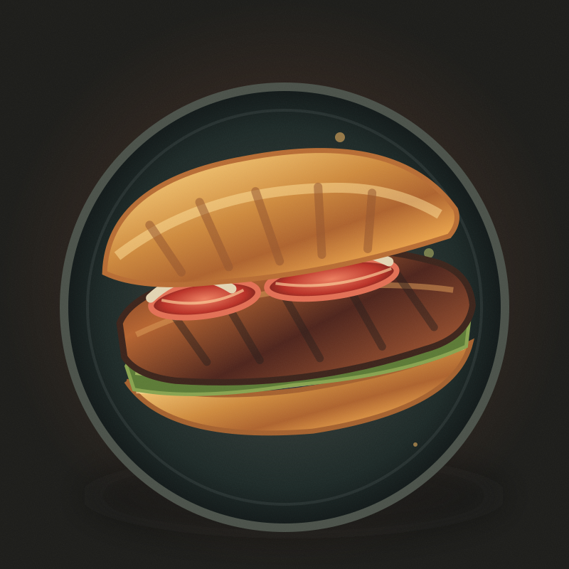

БЕСТСЕЛЛЕР
СЕРБСКИЙ ГРИЛЬ В КОРОЛЁВЕ
СЕРБИЯ.
НА ОГНЕ.
Сочная плескавица. Ароматный гриль. Настоящий вкус Сербии — прямо рядом с домом.
5,0 на Яндекс Картах
Любят за вкус и щедрые порции
Любят за вкус и щедрые порции

100% ВКУССЕРБИИ ПЛЕСКАВИЦА КЛАССИКА БАЛКАН
SRB
ЖАР · ВКУС · ХАРАКТЕРGRILL
НЕ ПРОСТО
ФАСТФУД
ФАСТФУД
МАЛЕНЬКАЯ СЕРБИЯ РЯДОМ
НЕЖНО К
МЯСУ.
СЕРЬЁЗНО К
ГРИЛЮ.
Здесь любят открытый огонь, честные вкусы и порции, после которых не хочется искать перекус.
01
Еда с огня
Сербские мясные блюда — сердце нашего меню.
02
Большой аппетит — это к нам
От плескавицы до мясного ассорти на компанию.
03
Свои люди
Уютная атмосфера и тёплый приём прямо в Королёве.
ПРИЯТНЫЙ ПОВОД ВЕРНУТЬСЯ
ЛЮБИМЫМ ГОСТЯМ
ВОЗВРАЩАЕТСЯ ВКУС.
В бонусной программе «Балкан» — 5% бонусами с покупки и возможность оплатить ими до 20% следующего чека. Подробности и условия уточняйте у сотрудников.
ГОВОРЯТ ГОСТИ
ВКУС, ЗА КОТОРЫМ
ВОЗВРАЩАЮТСЯ.
Яндекс Карты
“
Огромные порции, свежая еда и очень приветливый персонал. В комбо особенно понравились плескавица и сырные палочки.
Татьяна В.Отзыв на Яндекс Картах
“
Плескавица сочная и сытная, батат с отличной корочкой, а фруктовый чай — идеальное дополнение к обеду.
Гость заведенияОтзыв на Яндекс Картах
“
Заказывали плескавицы с доставкой на компанию. Всё приехало аккуратно упакованным и очень понравилось.
Александр Г.Отзыв на Яндекс Картах
Содержание отзывов передано в сокращённом пересказе.
ПОРА ЗНАКОМИТЬСЯ
ЗАХОДИ
НА ОГОНЁК.
Вкус Сербии ближе, чем кажется. Мы в Королёве, рядом со станцией Болшево.
АДРЕСКоролёв, ул. Марины Цветаевой, 3А
РАБОТАЕМЕжедневно, 10:00–22:00
ТЕЛЕФОН+7 (903) 779-17-29